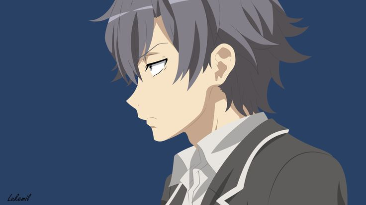
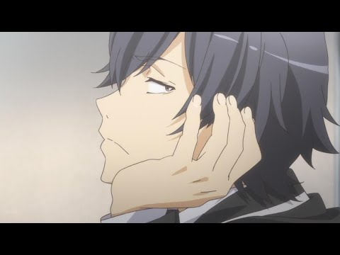

Conocido como "Hikki" o "8man", Hachiman es un estudiante pragmatista, cínico y observador que desprecia la hipocresía de la juventud idealizada. Aunque al principio prefiere sacrificarse a sí mismo para resolver los problemas de los demás, su paso por el Club de Voluntariado lo lleva a cuestionar sus propios métodos y a desear algo verdaderamente genuino.

